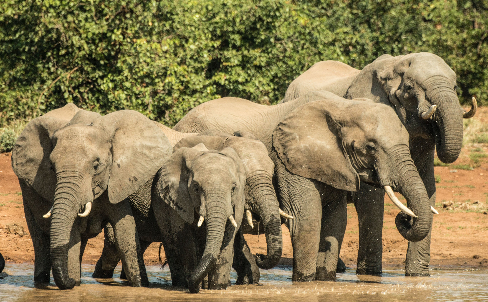
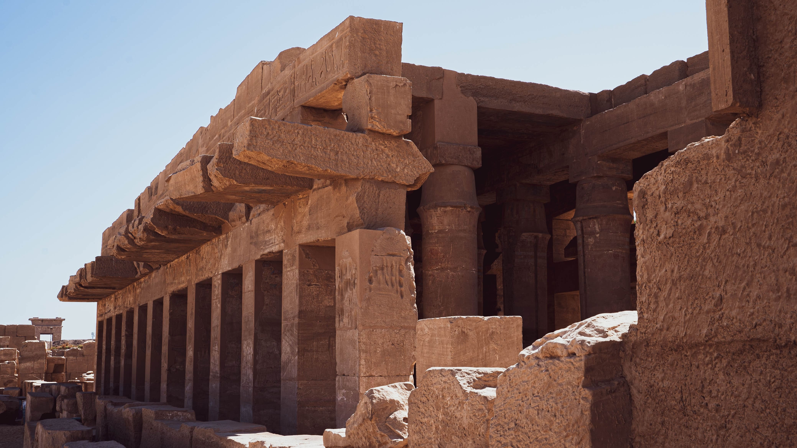

Kruger National Park is a South African National Park and one of the largest game reserves in Africa. It covers an area of 19,623 km2 (7,576 sq mi) in the provinces of Limpopo and Mpumalanga in northeastern South Africa, and extends 360 km (220 mi) from north to south and 65 km (40 mi) from east to west. The administrative headquarters are in Skukuza. Areas of the park were first protected by the government of the South African Republic in 1898, and it became South Africa's first national park in 1926.

Mount Kilimanjaro , Tanzania.
Mount Kilimanjaro is a dormant volcano located in Kilimanjaro Region of Tanzania. It has three volcanic cones: Kibo, Mawenzi, and Shira. It is the highest mountain in Africa and the highest single free-standing mountain above sea level in the world: 5,895 m (19,341 ft) above sea level and about 4,900 m (16,100 ft) above its plateau base. It is the highest volcano in Africa and the Eastern Hemisphere.
Kilimanjaro is the fourth most topographically prominent peak on Earth. It is part of Kilimanjaro National Park and is a major hiking and climbing destination.

Victoria Falls, Zimbabwe.
Victoria Falls s a waterfall on the Zambezi River in southern Africa, which provides habitat for several unique species of plants and animals. It is located on the border between Zambia and Zimbabwe and is one of the world's largest waterfalls, with a width of 1,708 m (5,604 ft).
While it is neither the highest nor the widest waterfall in the world, the Victoria Falls is classified as the largest, based on its combined width of 1,708 metres (5,604 ft)
Fish River Canyon , Namibia.
The Fish River Canyon is located in the south of Namibia. It is the largest canyon in Africa, as well as the second most visited tourist attraction in Namibia. It features a gigantic ravine, in total about 160 kilometres (100 mi) long, up to 27 km wide and in places almost 550 meters deep.
The Fish River is the longest interior river in Namibia. It cuts deep into the plateau which today is dry, stony and sparsely covered with hardy drought-resistant plants. The river flows intermittently, usually flooding in late summer; the rest of the year it becomes a chain of long narrow pools. The hot springs resort of ǀAi-ǀAis is situated at the lower end of the Fish River Canyon

Luxor, Egypt.
Luxor is a modern city in Upper (southern) Egypt which includes the site of the Ancient Egyptian city of Thebes. Luxor has frequently been characterized as the "world's greatest open-air museum", as the ruins of the Egyptian temple complexes at Karnak and Luxor stand within the modern city. Immediately opposite, across the River Nile, lie the monuments, temples and tombs of the west bank Theban Necropolis, which includes the Valley of the Kings and Valley of the Queens.

kruger national park, South Africa.
Kruger National Park is a South African National Park and one of the largest game reserves in Africa. It covers an area of 19,623 km2 (7,576 sq mi) in the provinces of Limpopo and Mpumalanga in northeastern South Africa, and extends 360 km (220 mi) from north to south and 65 km (40 mi) from east to west.
The administrative headquarters are in Skukuza. Areas of the park were first protected by the government of the South African Republic in 1898, and it became South Africa's first national park in 1926.

The Dahara Desert, Libya.
The Sahara is a desert on the African continent. With an area of 9,200,000 square kilometres (3,600,000 sq mi), it is the largest hot desert in the world and the third-largest desert overall, smaller only than the deserts of Antarctica and the northern Arctic.
The desert covers much of North Africa, excluding the fertile region on the Mediterranean Sea coast, the Atlas Mountains of the Maghreb, and the Nile Valley in Egypt and the Sudan.
La Digue, Seychelles.
Seychelles officially the Republic of Seychelles (French: République des Seychelles; Creole: La Repiblik Sesel), is an island country and archipelagic state consisting of 155 islands (as per the Constitution) in the Indian Ocean.
Its capital and largest city, Victoria, is 1,500 kilometres (800 nautical miles) east of mainland Africa. Nearby island countries and territories include the Comoros, Madagascar, Mauritius, and the French overseas departments of Mayotte and Réunion to the south; and Maldives and the Chagos Archipelago (administered by the United Kingdom as the British Indian Ocean Territory) to the east.